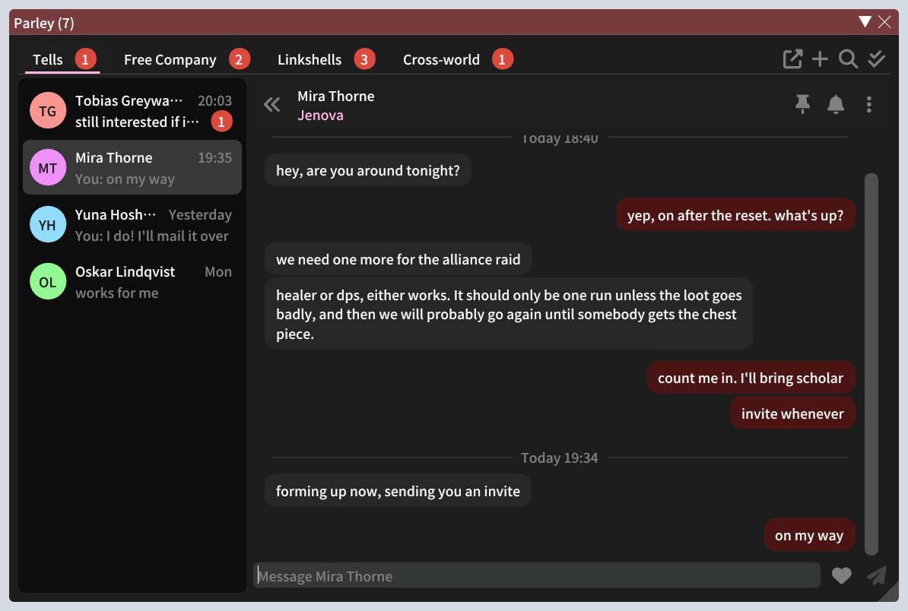
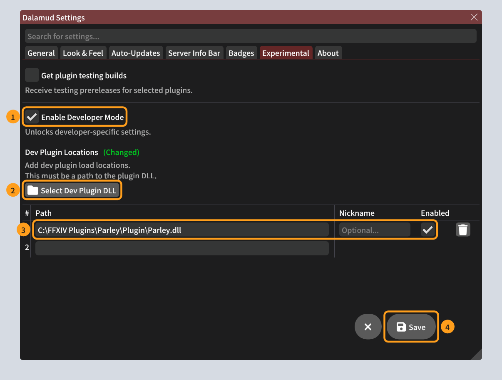
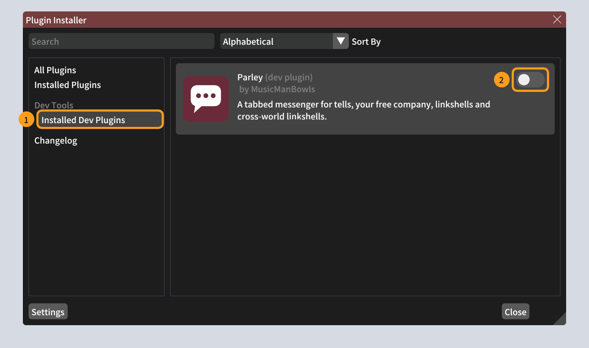
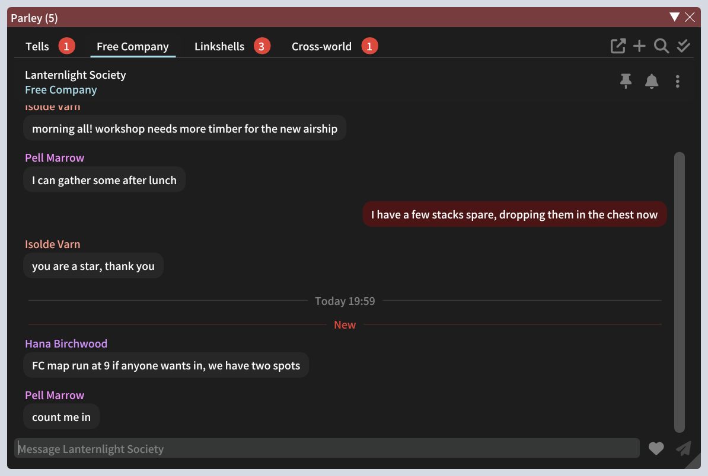
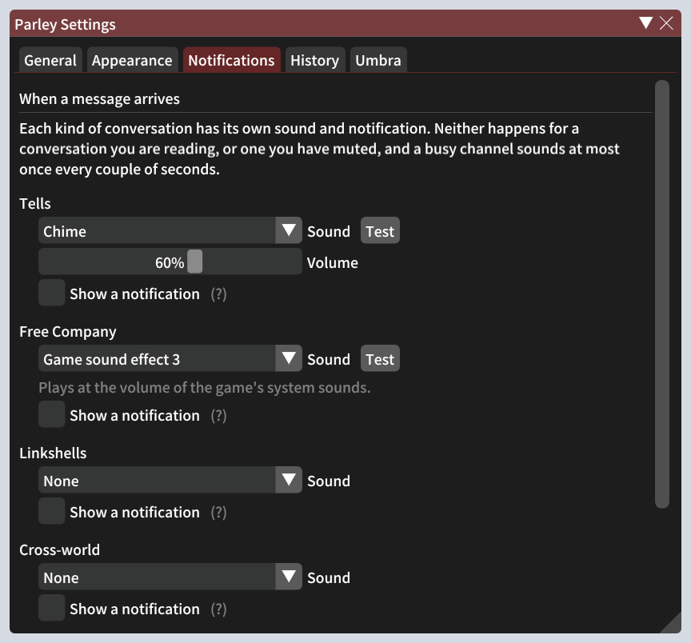

Installing Parley
A test build of a chat plugin for Final Fantasy XIV. Test build of {{BUILD_DATE}}.
Parley keeps your tells, free company chat, linkshells and cross-world linkshells in one tidy window, with a tab for each kind of chat and a list of conversations down the side. It remembers your chat history, counts what you haven't read yet, and can make a sound when a message arrives.

Before you start
You need
- Final Fantasy XIV, started through XIVLauncher with plugins working (you can open
/xlpluginsin game). - About five minutes.
Optional
- Umbra, if you use it and want a button on its toolbar that shows new messages, like a phone notification.
What's in the zip
Keep the three files in Plugin together. Parley is loaded straight from that folder, which is why step 1 matters.
Put the files somewhere they can stay
The game loads Parley from wherever you unzip it, every time it starts, so don't leave it in a folder you tidy out, like Downloads.
- Make a folder such as C:\FFXIV Plugins.
- Right-click the zip, choose Extract All…, and extract it into that folder.
- You should now have a file at a path like C:\FFXIV Plugins\Parley\Plugin\Parley.dll. It's fine if yours is a little different; you'll pick the file in the next step.
Tell Dalamud where Parley is
Parley isn't in the official plugin list yet, so Dalamud needs to be pointed at it once. In game, type /xlsettings in the chat box and press Enter. Then:
- 1Open the Experimental tab and tick Enable Developer Mode. A section called Dev Plugin Locations appears underneath.
- 2Click Select Dev Plugin DLL, find the Parley.dll in the
Pluginfolder from step 1, and choose it. - 3It's added to the list, with Enabled ticked.
- 4Click Save, the round button at the bottom right.

Turn Parley on
Type /xlplugins to open the Plugin Installer.
- 1In the list on the left, under Dev Tools, click Installed Dev Plugins.
- 2Find Parley (dev plugin) and, if its switch is off, click it to turn Parley on.

Open Parley
Type /parley to open or close the window. Tells, free company, linkshell and cross-world linkshell messages collect in it from now on; older chat from before you installed it won't appear.

Things worth knowing
- Click a tab to switch between Tells, Free Company, Linkshells and Cross-world. Red numbers are messages you haven't read.
- Type in the box at the bottom and press Enter to reply. Long messages are split into several automatically.
- With Parley selected, Alt+R goes to the next conversation in the tab, and Alt+Shift+R goes back.
- Start a new tell with the + at the top right, by typing
/parley First Last@World, or by right-clicking a player in game and choosing Message in Parley. - Right-click a conversation or a message for more options: pin, mute, copy, give someone's name a colour of your choosing, and so on.
- The cog in the window's title bar, or
/parley config, opens the settings.
Sounds and notifications
By default Parley is silent. In the settings, the Notifications tab gives each kind of chat its own sound (one of Parley's own, one of the game's sound effects, or a WAV file of your own), a volume, and a pop-up notification if you want one. Test plays the sound so you can hear it.

The Appearance tab changes how Parley looks. It can match Dalamud's style, the colour theme you picked in the game's System Configuration, or your Umbra colours.
Optional: the Umbra toolbar button
Only if you use Umbra. This adds a button to Umbra's toolbar that says how many messages are waiting.
Left-click opens Parley. Right-click marks everything as read.
Install it
- Type
/umbrato open Umbra Settings, and pick Plugins on the left. - The first time, Umbra shows A word of warning… about plugins made by other people. Tick I have read and agreed to the above statement.
- Under Install from file, click Browse... and choose Umbra.Parley.dll from the
Umbra widgetfolder. - Umbra says it needs to be restarted. Click Restart Umbra.
A word of warning...
Third-party plugins should only be installed from trusted sources. …
I have read and agreed to the above statement.Install a Plugin
Install from file
Install a plugin from a DLL file on your computer. Click the browse button to select the file.
Browse...Illustration of Umbra's settings, simplified. The buttons to press are ringed.
Put it on the toolbar
- In Umbra Settings, pick Toolbar Widgets.
- Under Left Side, Center or Right Side, click Add Widget, search for Parley, and click Add Parley.
- To change what the button shows, open that widget's settings. There's a choice of wording ("2 new Tells", "T:2 FC:0 LS:5 CW:1" or "8 new messages") and a choice of which chats it counts.
Updating to a newer test build
- Extract the new zip over the old folder, so the new Parley.dll replaces the old one in the same place.
- That's all. Dalamud notices the file has changed and reloads Parley by itself. If it doesn't, restart the game.
- If you use the Umbra button, replace Umbra.Parley.dll the same way and click Restart Umbra.
Your settings and chat history are kept separately and survive updates.
If something goes wrong
| What you see | What to do |
|---|---|
No Dev Plugin Locations section in /xlsettings |
Tick Enable Developer Mode first, on the Experimental tab. |
| A warning next to the path, or Parley isn't under Installed Dev Plugins | The path must end in Parley.dll, and Parley.json must be in the same folder. Check you clicked Save, then look again in /xlplugins. |
| Parley was working but vanished after you moved or deleted the folder | Put the folder back, or do step 2 again pointing at its new place. |
| Umbra won't load the Parley button | The button is built for Umbra 3.1. Send along which version of Umbra you have (it's shown in the plugin installer). |
| An error, or something looks wrong | Type /xllog to open Dalamud's log, then take a screenshot of any red lines that mention Parley. Send it along with what you were doing. |
Removing Parley
- In
/xlplugins→ Installed Dev Plugins, turn Parley's switch off. - In
/xlsettings→ Experimental, click the bin icon beside Parley's path, then Save. - If you added the Umbra button, remove it in Umbra Settings → Plugins.
- Delete the folder. Your chat history is in %AppData%\XIVLauncher\pluginConfigs\Parley if you want to keep it or delete it too.